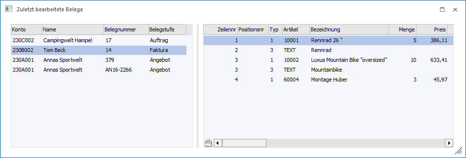
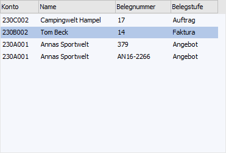
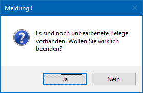
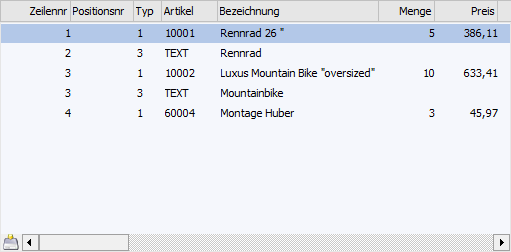
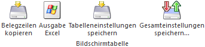
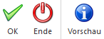

Für die parallele Bearbeitung von Belegen besteht die Möglichkeit Belege in einer Zwischenablage zu parken. Dieses ist über folgende Wege möglich:
ü Button "Neuer Beleg"
(Belegerfassung)
Der aktuelle Beleg wird automatisch in die Zwischenablage
gepackt.
ü Button "Laden"
(Belegerfassung)
Wenn über den Button "Laden" ein Beleg ausgewählt wird, dann
wird der aktuelle Beleg automatisch in die Zwischenablage gepackt.
ü Auswahl eines Belegs über das Feld
"Laufnummer" (Belegerfassung)
Wenn über das Feld "Laufnummer" (Eingabe einer
Nummer oder Auswahl aus dem "Beleg - Matchcode") ein anderer Beleg ausgewählt
wird, dann wird der aktuelle Beleg automatisch in die Zwischenablage
gepackt.
ü Funktion "Beleg parken"
(Belegmanagement / Belege)
Mit Hilfe der rechten Maustaste (Funktion "Beleg
parken") können offene Angebot bzw. nicht gerechnet / gedruckte Belege in die
Zwischenablage übergeben werden.
Die Zwischenablage selber kann in der Belegerfassung mittels Button "Laden" aufgerufen werden oder wird bei Nutzung der Funktion "Beleg parken" automatisch gestartet.

In dem Fenster stehen 2 Tabellen zur Verfügung:
ü Belege
ü Belegzeilen
Tabelle "Belege"

In der Tabelle werden geparkte Belege dargestellt. Per Doppelklick, Enter, F5 oder dem Button "Ok" wird der markierte Beleg in der Belegerfassung geladen.
Hinweis
Sind noch geparkte Belege vorhanden und die Belegerfassungsmaske wird geschlossen, dann erscheint einen Hinweis, dass noch unbearbeitete Belege vorhanden sind. Wird der Hinweis mit "Ja" bestätigt, werden die geparkten Belege verworfen. Bei "Nein", können die Belege weiterbearbeitet werden.

Tabelle "Belegzeilen"

In der Tabelle "Belegzeilen" werden alle Belegzeilen des Typs "Artikel" und "Text" des aktuell markierten Belegs (Tabelle "Belege") angezeigt. Mit Hilfe des Tabellenbuttons "Belegzeile kopieren" können ausgewählte Zeilen in einen weiteren Zwischenspeicher eingefügt werden.
Tabellenbuttons (Tabelle "Belegzeilen")

Ø Belegzeilen kopieren
Durch Anwahl des Button "Belegzeilen kopieren" werden die markierten Belegzeilen in den Zwischenspeichern gelegt und stehen in der Belegerfassung zum Einfügen zur Verfügung (Tabellenbutton "Belegzeilen einfügen").
Ø Ausgabe Excel
Durch Anwahl des Buttons "Ausgabe Excel" wird der Inhalt der Tabelle nach Microsoft Excel übergeben.
Ø Tabelleneinstellungen speichern
Die Spalten einer Tabelle können grundsätzlich an beliebige Positionen verschoben, bzw. in der Breite entsprechend angepasst werden. Durch Anwahl des Buttons "Tabelleneinstellungen speichern" werden die Einstellungen benutzerspezifisch gespeichert und bei dem nächsten Aufruf des Programmpunktes wieder vorgeschlagen.
Ø Gesamteinstellungen speichern
Im Gegensatz zu "Tabelleneinstellungen speichern" können mit "Gesamteinstellungen speichern" mehrere Tabellenaufbauten gespeichert und nach Wunsch geladen werden. Zusätzlich werden Sonderfunktionen der Tabelle (z.B. "Spalte gruppieren") ebenfalls bei der Speicherung bedacht.
Buttons

Ø Ok
Bei Anwahl des Buttons "Ok" bzw. der Taste F5 wird der aktuell markierte Beleg in die Bearbeitung übernommen.
Ø Ende
Bei Anwahl des Buttons "Ende" bzw. der Taste ESC wird das Fenster geschlossen und kein geparkter Beleg geladen.
Ø Vorschau
Durch Anklicken des Buttons "Vorschau" kann der geparkte Beleg in einer Belegvorschau angesehen werden.